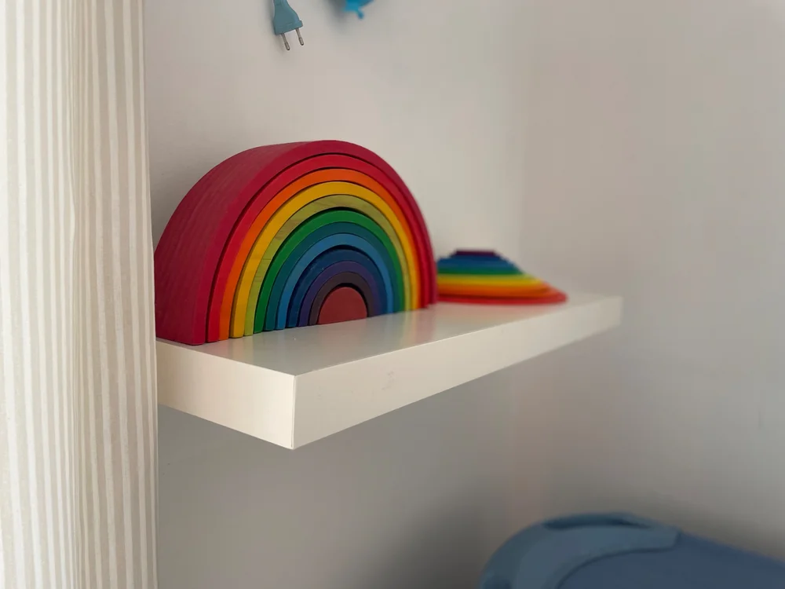
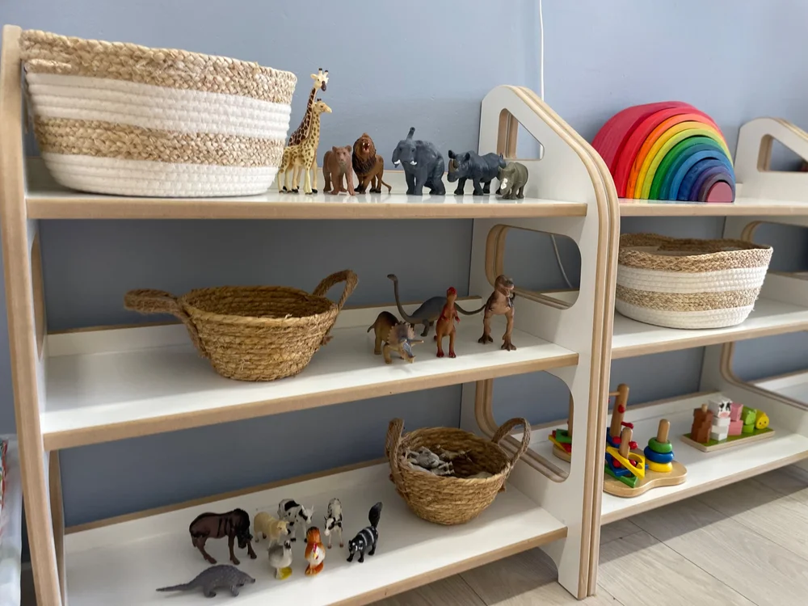
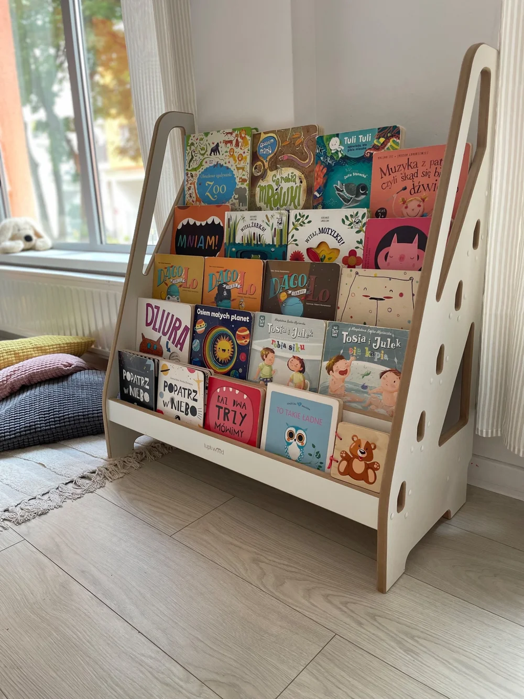

ZMYSŁY I TWORZENIE
ZMYSŁY I TWORZENIE01 /
Rączki pełne pomysłów
Sensoplastyka®, faktury, kolory i swoboda eksperymentowania.
MAŁY ŻŁOBEK. WIELKI ŚWIAT.
Dobry początek w swoim tempie.
Kameralny żłobek w sercu Wrocławia. Z uważnością na emocje, przestrzenią na odkrycia i czasem na bycie po prostu sobą.
Dąbrowskiego 32/1U · blisko Dworca Głównego


Miejsce na małeBONJOUR ZNACZY DZIEŃ DOBRY
Najpierw relacja. Potem cała reszta.
W małej grupie łatwiej dostrzec to, co ważne: spojrzenie, potrzebę bliskości, gotowość do kolejnej próby. Towarzyszymy dzieciom z szacunkiem dla ich granic i własnego tempa.
Blisko nam do rodzicielstwa bliskości, Porozumienia bez Przemocy i samodzielnego odkrywania świata. Codzienność budujemy bez kar i nagród, za to ze spokojną obecnością dorosłego.
Jak wygląda początek?ZABAWA MA ZNACZENIE
Dotknąć. Usłyszeć. Spróbować.
Aktywności, które zostawiają miejsce na ciekawość.
ZMYSŁY I TWORZENIESensoplastyka®, faktury, kolory i swoboda eksperymentowania.
Music Care, logorytmika i spotkania z dźwiękiem oraz ruchem.

ZWIERZĘTA I NATURADogoterapia, alpakoterapia i odkrywanie przyrody z AnimalEdu.

SŁOWO I WYOBRAŹNIAPani Teatrzyk, wspólne czytanie i zabawy z językiem angielskim.
POCZĄTEK W WASZYM TEMPIE
Adaptacja z rodzicem.
Z uważnością na dziecko.
Nowe miejsce, nowe głosy, nowa codzienność. Dajemy czas na poznanie tego wszystkiego przy bliskiej osobie. Korzystamy z założeń modelu berlińskiego i dopasowujemy kolejne kroki do sygnałów dziecka.
Porozmawiajmy o adaptacjiRozmawiamy o Waszej codzienności, przyzwyczajeniach i potrzebach. Wspólnie przygotowujemy początek.
Dziecko odkrywa otoczenie, mając bliską osobę obok. Opiekunka stopniowo buduje z nim relację.
Kiedy widzimy gotowość, umawiamy pierwszą krótką próbę. Obserwujemy reakcję i rozmawiamy z rodzicem.
Czas pobytu wydłużamy stopniowo. Nie obiecujemy jednej liczby dni — ważne jest to, jak czuje się dziecko.
CHWILA DLA WAS
Trzy krótkie pytania. Podpowiemy, od czego zacząć poznawanie naszego żłobka.
Bez zapisywania odpowiedzi i podawania danych.ROZGOŚĆCIE SIĘ
Spokojne wnętrze.
Tyle możliwości.
Dwie sale, niskie półki, książki w zasięgu ręki i materiały, które zapraszają do samodzielnych prób. Nasza kameralna przestrzeń mieści do 20 dzieci.
Inspirujemy się Montessori i Reggio Emilia. Zostawiamy miejsce na własne pomysły, odpoczynek i zwyczajne, codzienne odkrycia.
Zobacz nasze zakątkiNASZA CODZIENNOŚĆ
Plan porządkuje codzienność.
Potrzeby dzieci nadają jej tempo.
Spokojne powitania, czas na swobodną zabawę i wspólne śniadanie. Pomagamy wejść w żłobkową codzienność z poczuciem bezpieczeństwa.
Zapytaj o organizację dnia ↗LUDZIE TWORZĄ MIEJSCE
Liczy się dla nas sposób, w jaki dorosły jest z dzieckiem: spokojny głos, szacunek do granic i uważność na emocje. Wspólnie dbamy o te zasady w codziennej pracy.
Poznaj nas podczas wizytyZAŁOŻYCIELKA I DYREKTORKA
Pedagog opiekuńczo-wychowawczy
i pedagog specjalny.
Budujemy relacje, wspieramy samodzielność i towarzyszymy w emocjach. Z rodzicami rozmawiamy o codzienności dziecka.
Szkolenia, pierwsza pomoc i współpraca ze specjalistami, w tym psychologiem i neurologopedą, wspierają naszą pracę.
MAŁE RZECZY, NASZ ŚWIAT
 Codzienność w małej skali ↗
Odkrywanie przez dotyk ↗
Przestrzeń dla wyobraźni ↗
Tu zaczyna się nasz dzień ↗
Codzienność w małej skali ↗
Odkrywanie przez dotyk ↗
Przestrzeń dla wyobraźni ↗
Tu zaczyna się nasz dzień ↗
Przesuń, żeby zobaczyć więcej. Dotknij zdjęcia, żeby je powiększyć.
WSPARCIE DLA WASZEJ RODZINY
Porozmawiajmy o kosztach.
Jasno, krok po kroku.
LOKALNIE
W Bonjour Bébé są miejsca objęte dofinansowaniem Gminy Wrocław. Zapytaj o dostępność miejsca na planowany termin i warunki korzystania z dotacji.
Zapytaj o miejsce dotowane ↗PROGRAM AKTYWNY RODZIC
Świadczenie ZUS obniża opłatę za pobyt. Może wynieść do 1900 zł przy orzeczeniu o niepełnosprawności ze wskazaniami wymaganymi w programie. Nie obejmuje wyżywienia.
Sprawdź zasady w ZUS ↗Prześlemy aktualne czesne, koszt wyżywienia i pakietu zajęć oraz zasady rozliczania dofinansowań dla Waszego terminu.
Świadczenie wymaga wniosku rodzica i spełnienia warunków programu. Wysokość jest ograniczona opłatą za pobyt. Przyznanie świadczenia i dotacji nie jest automatyczne. Aktualne zasady programu ↗
RODZICE PYTAJĄ
Jest coś jeszcze, o czym chcesz porozmawiać? Jesteśmy blisko.
507 879 104Tak. Rekrutacja trwa przez cały rok. Jeśli mamy wolne miejsce, możecie rozpocząć w dowolnym momencie. Dostępność na konkretny termin potwierdzimy podczas rozmowy.
Tak, rodzic towarzyszy dziecku na sali. Najpierw wspólnie poznajecie miejsce i opiekunki. Pierwsze krótkie rozstania oraz wydłużanie pobytu dopasowujemy do reakcji i gotowości dziecka. Poznaj kolejne kroki adaptacji.
Każde dziecko potrzebuje innego czasu. Warto zostawić sobie przestrzeń na stopniowy początek i obecność rodzica. Nie wyznaczamy jednego terminu dla wszystkich — plan ustalamy i korygujemy wspólnie.
Spacery i kontakt z otoczeniem są stałą częścią naszego rytmu dnia. Wyjście dostosowujemy do pogody, jakości powietrza i potrzeb grupy. Bezpieczeństwo oraz samopoczucie dzieci są najważniejsze.
Posiłki dostarcza catering. Przed zapisem prześlemy aktualny jadłospis i informacje o dostawcy. Omówimy też alergie, dietę i możliwości jej realizacji, zanim podejmiecie decyzję. Poproś o jadłospis.
W ofercie są między innymi Music Care, logorytmika, Sensoplastyka®, angielski, Pani Teatrzyk, dogoterapia, alpakoterapia i AnimalEdu. Zajęcia odbywają się według harmonogramu. Szczegóły programu i opłaty przedstawiamy w aktualnej ofercie. Poznaj zajęcia.
Mamy miejsca dotowane przez Gminę Wrocław i obsługujemy świadczenie „Aktywnie w żłobku”. Dostępność dotowanych miejsc oraz uprawnienia zależą od warunków danego programu. Pomożemy przejść przez informacje i dokumenty. Więcej o dofinansowaniu.
Oczywiście. Zadzwoń lub napisz, aby ustalić termin. Pokażemy Wam przestrzeń, opowiemy o codzienności i odpowiemy na pytania. Przed decyzją możecie też otrzymać ofertę, jadłospis oraz umowę do wglądu.
ZACZNIJMY OD ROZMOWY
Opowiedz nam o swoim dziecku.
Zapytaj o miejsce. Wpadnij zobaczyć nasz świat.
PRZED PIERWSZĄ WIZYTĄ
Chętnie prześlemy ofertę, jadłospis
i umowę do spokojnego przeczytania.